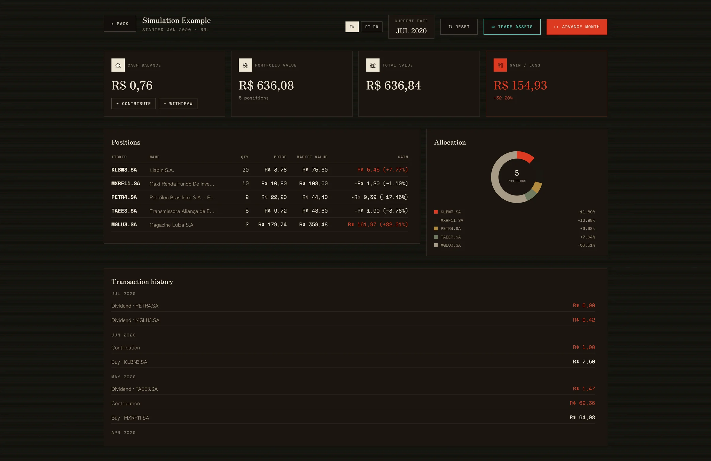
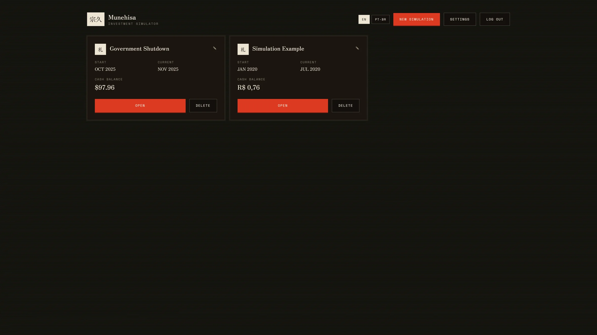
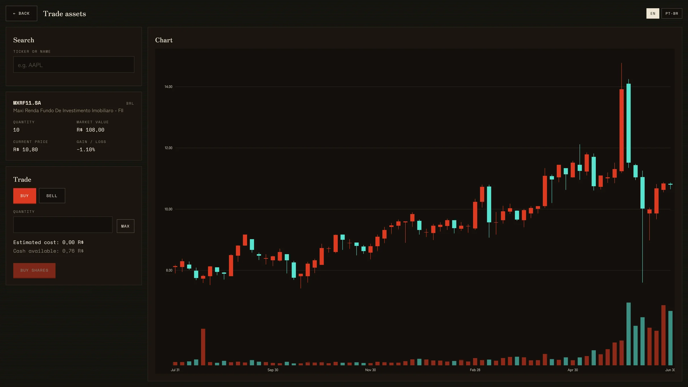

Backend & full-stack engineer building production-grade systems in Java and Spring Boot,
with a parallel track in low-level systems programming and Rust.



Full-stack, risk-free investment simulator — create a simulation, pick a historical starting month and base currency, and trade real historical market data month by month against a time-traveling broker. Java 21 / Spring Boot backend with Spring Security, JWT auth, JPA + PostgreSQL (Flyway-migrated schema), and Testcontainers-backed integration tests running in CI. A separate Python/FastAPI service handles market-data fetching; React + TypeScript frontend with an interactive D3 candlestick chart. Deployed live: static frontend on GitHub Pages backed by a Spring Boot API on a Hetzner Cloud VM.
⇗ github.com/HernaniSamuel/munehisa-investment-simulator ⇗ Live Demo ⇗ Screenshots (above)A cycle-accurate RV32IMA emulator written in Rust — boots a real Linux 6.1 kernel and FreeRTOS from bare-metal ELF. Implements the full RV32IMA ISA, machine-mode privileged spec, CLINT timer, UART 16550, ELF loader with symbol table, objdump-compatible disassembler, and execution tracer. Compiles to WebAssembly — see the live demo above, running the kernel in your browser. Inspired by and initially based on CNLohr's mini-rv32ima — the original ~400-line C implementation that first proved the concept of booting Linux on a minimal RV32 core.
⇗ github.com/HernaniSamuel/riscv-emulator ⇗ API Documentation ⇗ Live Demo (above)A Chip-8 interpreter built to learn how virtual machines work, including instruction decoding and ISA concepts.
⇗ github.com/HernaniSamuel/chip8Brainfuck interpreter created to practice software engineering skills and learn Rust, interpreters, and programming language concepts.
⇗ github.com/HernaniSamuel/brainfuckA programming language that compiles to SPIR-V. My first attempt at creating a programming language was intended to rival NVIDIA's CUDA (yes, I didn't really know what I was getting myself into). Never achieved true parallelism, but it actually works on the GPU. An honorable mention for getting this far using pure Python.
⇗ github.com/HernaniSamuel/sil_compiler
Backend-focused software engineer building production-grade systems with Java and Spring Boot.
Full-stack when the project calls for it — plus a parallel track in low-level systems and Rust.